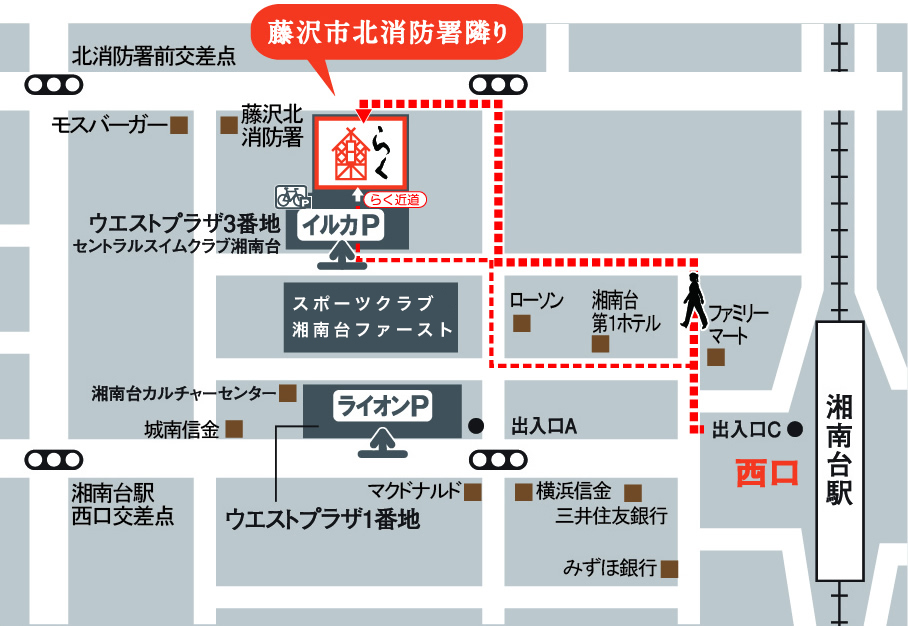

If you are travelling
Sagami-Ono is where the Odakyu line splits. One train to Shinjuku, one train to Machida, one train towards Odawara and Hakone, with no change.
On the way to Hakone or Kamakura+
Hakone and OdawaraOne train
Enoshima and KamakuraEnoshima line
A cheaper night than Hakone, an hour away from it, in the same water. Yugawara, where this water is drawn, is on the same line.


